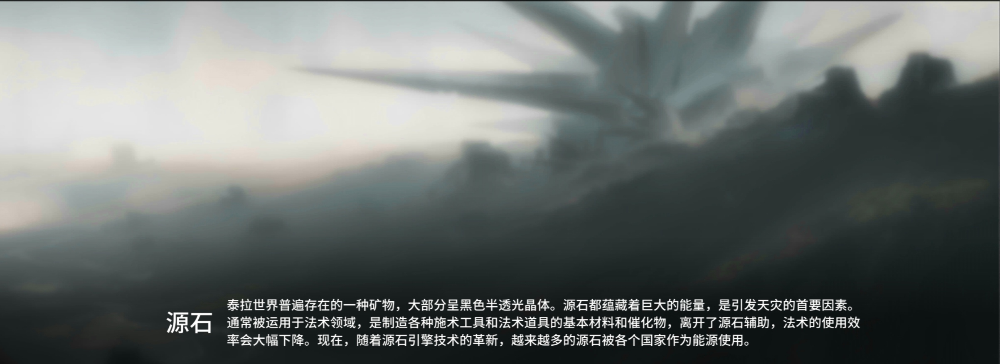
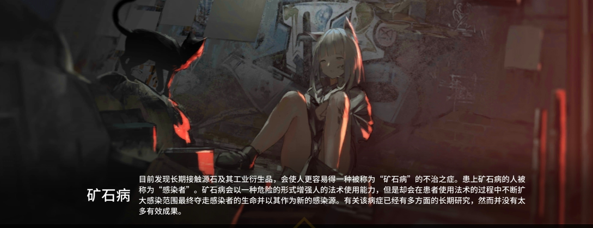
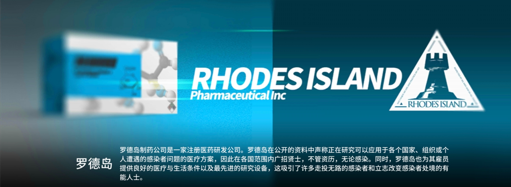
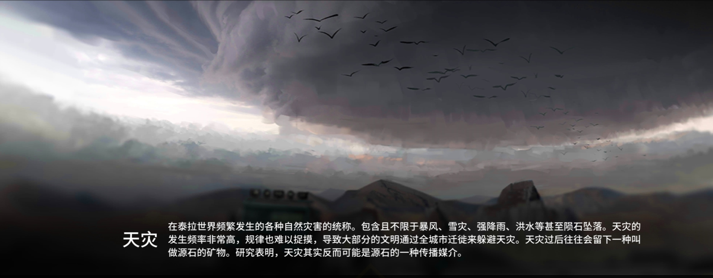
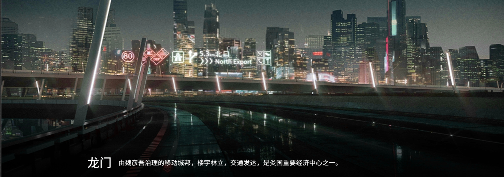
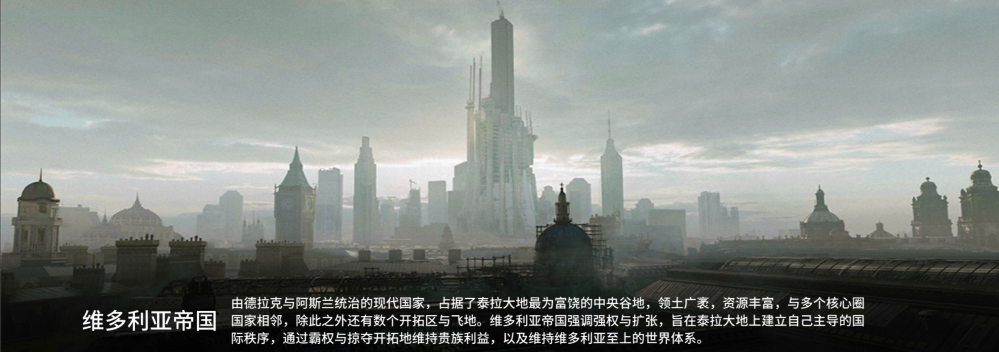
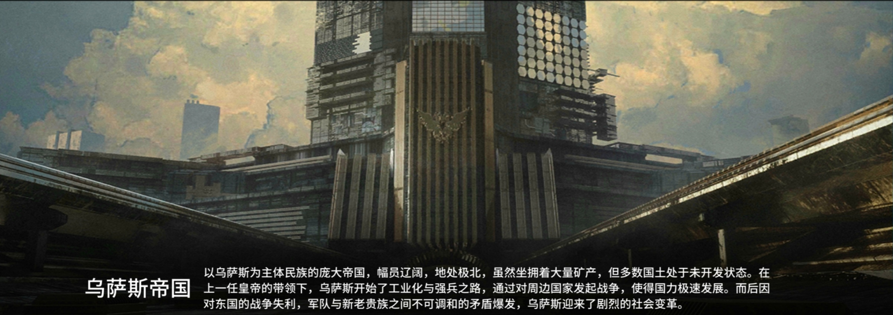
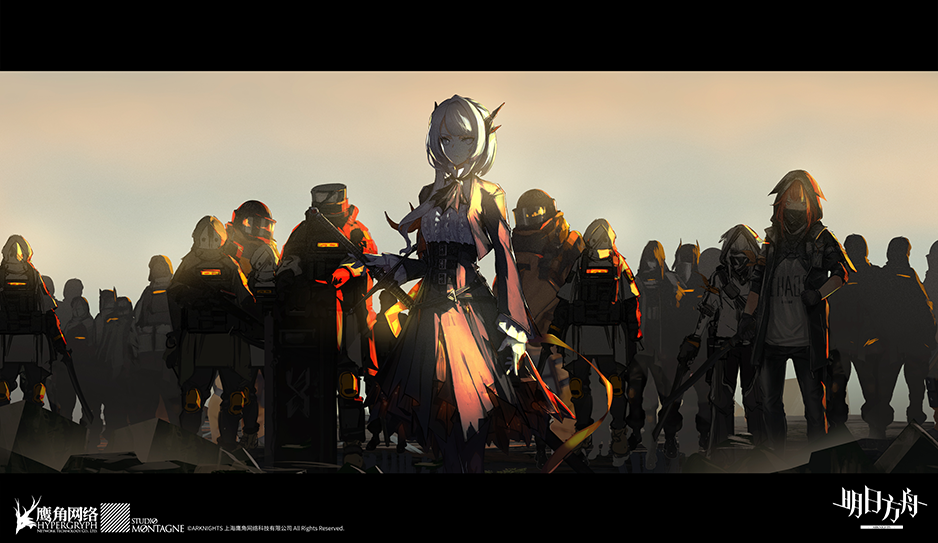
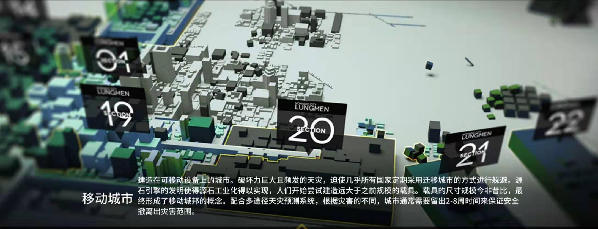

源石
泰拉世界普遍存在一种矿物， 大部分呈黑色半透光晶体。源石都蕴藏着巨大的能量， 是引发天灾的首要因素。通常被运用于法术领域，是制造各种施术工具和法术道具的基本材料和催化物，离开了源石辅助，法术的使用效率会大幅下降。现在，随着源石引擎技术的革新，越来越多的源石被各个国家作为能源使用。
矿石病
目前发现长期接触源石及其工业衍生品，会使人更容易得一种被称为“矿石病”的不治之症。患上矿石病的人被称为“感染者”。矿石病会以一种危险的形式增强人的法术使用能力，但是却会在患者使用法术的过程中不断扩大感染矿石病范围最终夺走感染者的生命并以其作为新的感染源。有关该病症已经有多方面的长期研究，然而并没有太多有效成果。
罗德岛
罗德岛制药公司是一家注册医药研发公司。罗德岛在公开的资料中声称正在研究可以应用于各个国家、组织或个人遭遇的感染者问题的医疗方案，因此在各国范围内广招贤士，不管资历、无论感染。同时，罗德岛也为其雇员提供良好的医疗与生活条件以及最先进的研究设备，这吸引了许多走投无路的感染者和立志改变感染者处境的有能人士。
天灾
在泰拉世界频繁发生的各种自然灾害的统称。包含且不限于暴风、雪灾、强降雨、洪水等甚至陨石坠落。天灾的发生频率非常高，规律也难以捉摸，导致大部分的文明通过全城市迁徙来躲避天灾。天灾过后往往会留下一种叫做源石的矿物。研究表明，天灾其实反而可能是源石的一种传播媒介。
龙门
由魏彦吾领导的独立城邦，开放、包容、自由是其最大的特征。
维多利亚帝国
由德拉克与阿斯兰统治的现代国家，占据了泰拉大地最为富饶的中央谷地，领土广袤，资源丰富，与多个核心圈国家相邻，除此之外还有数个开拓区与飞地。维多利亚帝国强调强权与扩张，旨在泰拉大地上建立自己主导的国际秩序，通过霸权与掠夺开拓地维持贵族利益，以及维持维多利亚至上的世界体系。
乌萨斯帝国
以乌萨斯为主体民族的庞大帝国，幅员辽阔，地处极北，虽然坐拥着大量矿产，但多数国土处于未开发状态。在上一任皇帝的带领下，乌萨斯开始了工业化与强兵之路，通过对周边国家发起战争，使得国力极速发展。而后因对东国的战争失利，军队与新老贵族之间不可调和的矛盾爆发，乌萨斯迎来了剧烈的社会变革。
源石技艺
源石被发现之后，人们发掘出一种通过它来施放一系列令物质改变原有性状的技术，这种技术被称为源石技艺，常被俗称为“法术”。源石技艺所运用的能源，一般被认为来自于源石本身。而人是否能施放法术，以及所能施放法术的形式、强度、效果等，通常受到先天具备的素质、后天对源石技艺的学习能力这两方面因素的制约。
整合运动
一个由感染者发起的政治运动，旨在争取感染者的平等权利。整合运动的成员大多是感染者，他们认为感染者不应被社会歧视和排斥，而应享有与普通人同等的权利和机会。整合运动通过各种方式宣传他们的理念，包括游行示威、发表演讲和组织社区活动。然而，整合运动也面临着来自社会各界的强烈反对，许多人认为感染者是危险的存在，应该被隔离和控制。
移动城市
建造在可移动设备上的城市。频繁发生且破坏力巨大的天灾，迫使几乎所有的国家，都需要采用定期迁移家园与聚落的方式进行躲避。而移动城市，正是在这种需求下慢慢诞生的。人们在迁徙的过程中，尝试将建筑和种种装置安设在移动设备之上，并不断地扩大载具的规模。在文明与技术的演变之下，人们最终创造出了十分庞大的移动城市。
